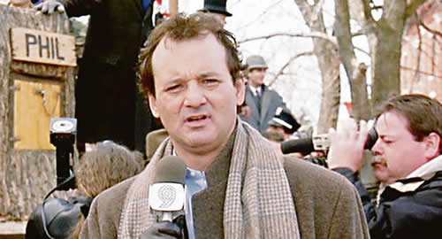

Real Chubut - Agencia de Noticias


Macri, el gas y su “Marmota”

El genial comediante norteamericano Bill Murray interpretó en 1993 "Groundhog Day", un film que, si bien en su estreno no fue un éxito importante, con el tiempo se convirtió en un clásico. Murray personifica al meteorólogo de una cadena nacional de TV, Phil Connors, que cubre un clásico evento norteamericano llamado "El Día de la Marmota" en la localidad de Punxsutawney, Pennsylvania. El evento le resulta aburrido y hasta algo denigrante para una estrella como él, y así lo hace saber en las crónicas. Sin embargo, algo falla, y Connors comienza a notar algo extraño: el día se va repitiendo una y otra vez; y, aunque caiga en cualquier tipo de excesos (incluso varios suicidios), el día siempre vuelve a empezar. Con el tiempo, la película y su metáfora se convirtieron en un clásico, y lentamente esto mutó en un concepto sociológico internacional estudiado incluso en universidades de Ciencias Políticas. Representa una situación conflictiva y un error de decisión que un gobernante repite una y otra vez; y del que, pese a que lo intente, no puede escapar. Finalmente, al no encontrar la solución, su gestión se verá manchada por ese factor y se lo recordará por ese efecto "Día de la Marmota" o simplemente por su "Marmota". Una "Marmota" sería un problema de gestión que un gobernante repite periódicamente y que por diferentes motivos, propios y ajenos, no puede solucionar.
Un tema relativamente menor, al menos en comparación con los otros problemas graves que tiene la Argentina, parece convertirse en un estigma del Gobierno de Mauricio Macri; y, con el tiempo, en su "Marmota".
Los cronistas que cubrieron los tiempos de la campaña electoral de 2015 junto con Mauricio Macri periódicamente cumplían su tarea analizando lo que se trabajaba y preparaba en la Fundación Pensar; un think tank donde, ya con Cambiemos formada como alianza, se diseñaban las políticas que una vez en el Gobierno el próximo presidente aplicaría. Prácticamente la totalidad del primer gabinete macrista, y varios de los colaboradores posteriores, pasaron por allí e hicieron su aporte en sus áreas de conocimiento específicas. La idea de esa organización era hacer estudios certeros sobre los problemas que heredaría Macri al llegar a la Casa de Gobierno, y tener ya preparadas líneas de administración efectivas para solucionarlos rápidamente. Aunque sean difíciles, siempre habría un plan de acción. Una de las mesas donde más se trabajaba era en la del retraso tarifario en los servicios públicos, el nivel de los subsidios, su efecto en la falta de inversión y en el déficit fiscal y, finalmente, la manera de salir de ese laberinto. En otras palabras, la manera de diseñar una política potable y seria de incremento de las tarifas al público y empresas, que resista el tiempo, sea socialmente aplicable, garantice inversiones de las empresas prestadoras en sus tres tramos (producción, transporte y distribución) y que en no más de un año cierre el conflicto para pasar a discutir otros temas vinculados a la generación de energía. Finalmente, Mauricio Macri llegó al poder, y el hombre que trabajó en la Fundación Pensar en estos temas, Juan José Aranguren, fue encumbrado como ministro de Energía con la misión, entre otras, de solucionar el conflicto de las tarifas de los servicios públicos. Era el momento de aplicar lo que se había trabajado en la Fundación Pensar. No pudo ser.
Entre febrero y marzo de 2016 el Ministerio de Energía presentó su primer plan de aumentos tarifarios de hasta 300%, sin mayor sofisticación que una endeble medición de consumos anualizados y sin demasiadas explicaciones públicas. Las protestas se generalizaron. Jubilados, pymes al borde del colapso, geriátricos, hospitales y hasta clubes de barrio empezaron a inundar los medios con boletas de tarifas de luz y gas con aumentos impresentables, y amenazas de cierres masivos. Para peor, Aranguren cometió un error técnico judicial imperdonable: no advirtió que legalmente cualquier aumento tarifario debía ser precedido por audiencias públicas que, aunque no vinculantes, eran imprescindibles para que los aumentos sean legales.
Desde ese primer pecado original hacia adelante (casi dos años y medio después), con una periodicidad relativa de tres meses, Mauricio Macri y su Gobierno debieron enfrentarse a crisis tras crisis sobre la forma, manera y justificación de los incrementos en las tarifas de los servicios públicos, con epicentro en el gas. Desde aquel marzo de 2016 hasta finalizado el primer semestre de 2018, el Gobierno nunca pudo explicarles a los usuarios cuál era la política para aplicar los incrementos en las tarifas que los usuarios de todo tipo comenzaban a recibir; y, aún peor, de cuánto sería el aumento que los clientes recibirían en el futuro. De hecho, hoy ningún funcionario puede explicarle a ningún usuario de ningún nivel cuál será el aumento tarifario y el porqué del incremento de las boletas que se recibirán desde el primer bimestre del año próximo. En el caso de los particulares, es una situación de protesta. En el caso de las empresas, es una tragedia aún peor, al no poder contar con ese costo fundamental en el momento de elaborar un presupuesto para 2019.
El clímax del despropósito en el diseño de la tarifa de gas, la "Marmota" del macrismo, se dio en la última semana. Cumpliendo una curiosa ley de 1993 (que ningún Gobierno se acordó de derogar desde la salida de la convertibilidad), las empresas productoras de gas tienen el derecho de ser compensadas ante una devaluación. El ahora secretario de Energía, Javier Iguacel (un hombre que según algunos colaboradores tiene intenciones de destaque político), aparentemente sin mayores consultas a otros ministros que en teoría deben combatir la inflación, decidió aplicar pagos en cuotas desde enero del próximo año para esta compensación. La decisión generó una catarata de indignación por dos motivaciones absolutamente lógicas: a los usuarios se les aplicó un incremento de entre 30% y 50% en tarifas que ya habían sido pagadas; y un sector particular de la economía sería compensado por una megadevaluación que afectó a toda la sociedad. Incluso, en la mayoría de los casos, aun más que a los futuros compensados. Aun así, Iguacel se convirtió en el embajador de los aumentos y recibió el apoyo explícito y público de Mauricio Macri, que sin eufemismos advirtió que los incrementos se aplicarían porque había que pagar "las cosas lo que valen". La aventura duró casi una semana. La amenaza de una espiralización política en tiempos difíciles hizo que se suspendieran las compensaciones y se las reemplazara por una solución a contramano del déficit cero que el Gobierno se comprometió con el FMI: la compensación por la devaluación a las gasíferas la pagarían los contribuyentes con sus impuestos. Un criterio 100% divorciado de la quintaesencia del capitalismo; un sistema que tiene implícitos los riesgos de arriesgar. Esos riesgos son los que hacen que el país tenga que pagar hoy 74% de tasas de interés. O dicho de otra manera, el sector privado, cada vez que va a pedir un crédito y se lo castiga con las tasas de interés actuales, ya está pagando ese riesgo devaluatorio. El resto del país, con la irreductible recesión actual, también.
Y el miércoles el Gobierno, casi vergonzantemente, anunció la marcha atrás. Para muchos analistas se trata de un ejemplo más de la falta de coordinación del equipo de gestión presidencial. Para otros, de los efectos de las internas de su gabinete. Y hay quienes advierten una alarmante improvisación. Algunos, más irónicos, hablan de la marcha atrás como un nuevo ejemplo del "Errorismo de Estado" o de la línea interna "Juan Domingo Perdón".
Lo cierto es que, una vez más, Mauricio Macri chocó contra el problema de las tarifas del gas; una "Marmota" que le generó otra crisis a su gestión. Para peor, en una de las pocas semanas de los últimos tiempos en las que el dólar le había dado un cierto respiro.
Lo peor es que la "Marmota" volverá. En pocos días, el Gobierno deberá explicar en qué lugar del proyecto de Ley del Presupuesto para 2019 se explicita el porcentaje de aumento de las tarifas de gas (y del resto de los servicios) para el próximo año. Lo más grave es que los funcionarios no podrán dar una respuesta. Simplemente porque aún no saben cuánto será ese incremento. Y no lo saben porque la inflación final de este año y la de 2019 es aún una incógnita. Y porque todavía no se decidió políticamente (2019 es año electoral) cuál es el porcentaje de incrementos que se aplicará.
En síntesis, en pocos meses, la "Marmota" atacará de nuevo.
Fuente: Ambito